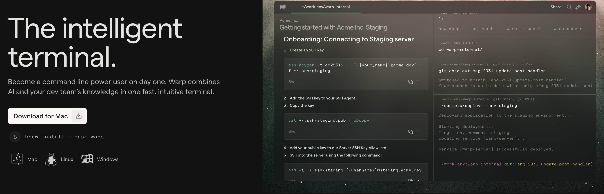
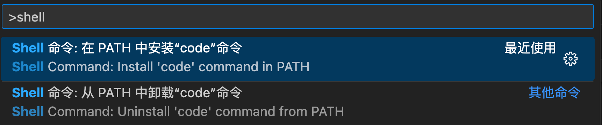
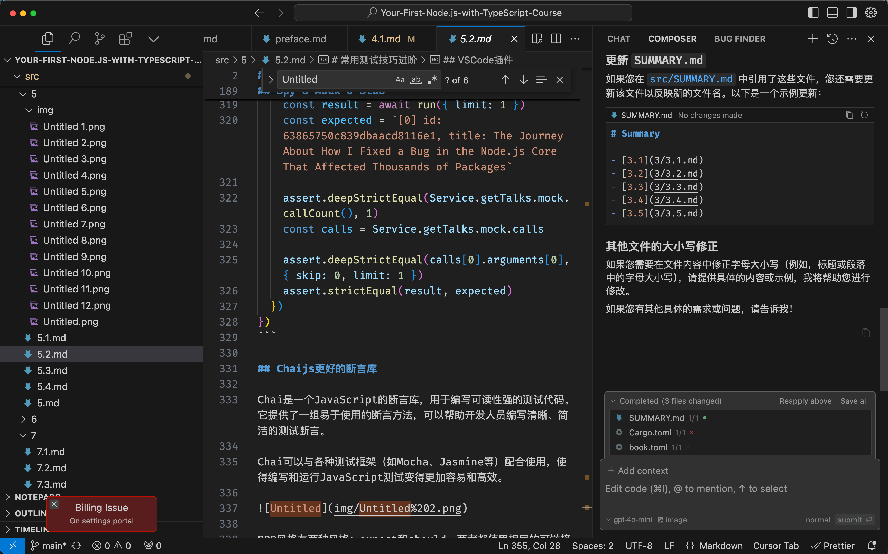

VSCode必杀技
首先，我们要承认开发是效率差别的，使用VSCode也是，下面列举几个我认为的提效技巧。
- 使用Warp终端
- 使用code命令
- 配置快捷键
- 使用插件
- 更好的编辑器Cursor
使用Warp终端
Warp 是一个非常强大的终端，它不仅支持多标签，还支持插件，比如我常用的 git 插件，可以非常方便的查看 git 提交记录，并且支持模糊搜索。

通常免费的功能就已经非常好用了。
Code命令

然后在终端中就可以使用了。
$ code --install-extension connor4312.nodejs-testing
配置快捷键
使用快捷键可以提高工作效率、减少手部负担，并提升专注力。因此，在编辑器中使用快捷键是非常推荐的。我是非常习惯XCode快捷键，所以把这套用法也拿到VSCode里，发现还是非常高效的。
keybindings.json
// 将键绑定放入此文件中以覆盖默认值
[
{ "key": "cmd+1", "command": "workbench.view.explorer" },
{ "key": "cmd+2", "command": "workbench.view.search" },
{ "key": "cmd+3", "command": "workbench.view.scm" },
{ "key": "cmd+4", "command": "workbench.view.debug" },
{ "key": "cmd+5", "command": "workbench.view.extensions" }
]
必备插件
.vscode/extensions.json 是项目用到的 插件 推荐列表，项目应该将此配置 写入用到的插件

- GitHub Copilot
- GitLens
- Pretty TypeScript Errors
- vscode-icons
- IntelliCode
- nodejs-testing
- wayou.vscode-todo-highlight
更好的编辑器Cursor
Cursor 是一个非常强大的 AI 编程工具，它可以帮助你快速生成代码，并且支持多种编程语言。

目前我的绝大部分开发都移到Cursor上，使用的是pro方案。
Cursor是基于VSCode改的，所以上面的插件依然使用，并且也可以在终端里安装cursor命令。
常用功能
- CMD + K 快速生成代码
- CMD + L 打开聊天窗口，composer和bug finder
其他参照VSCode即可。